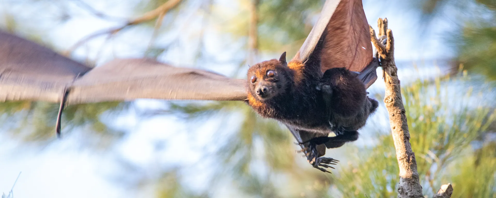
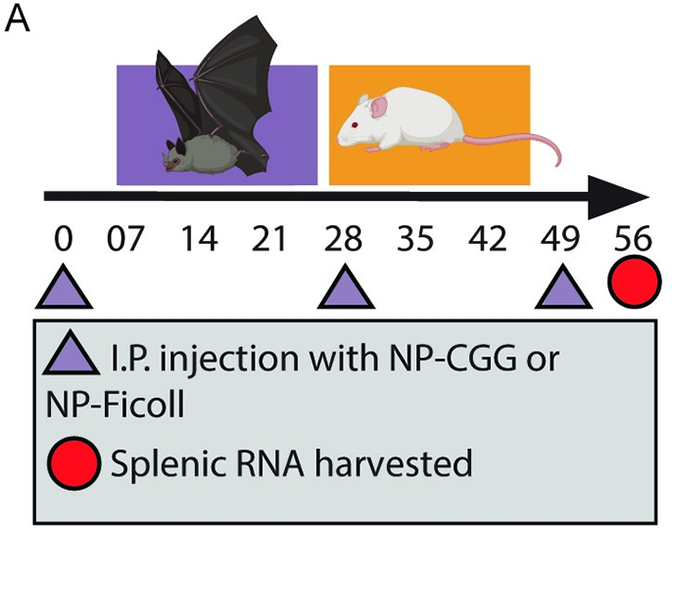
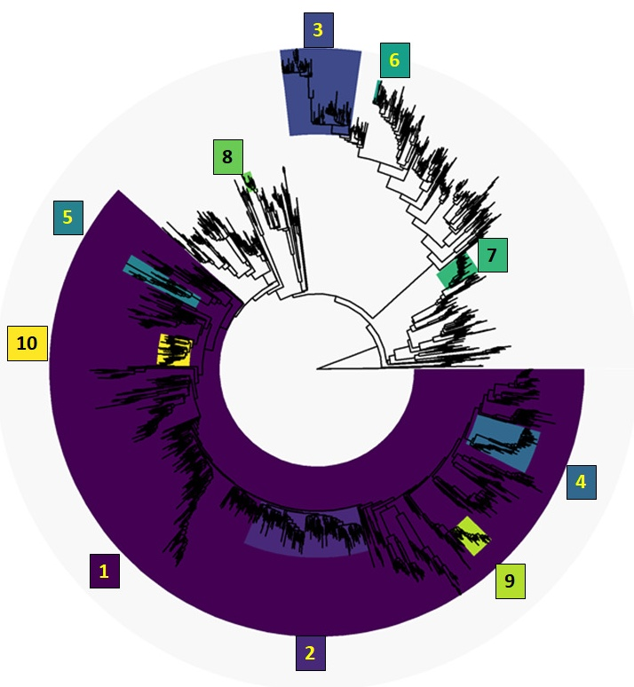
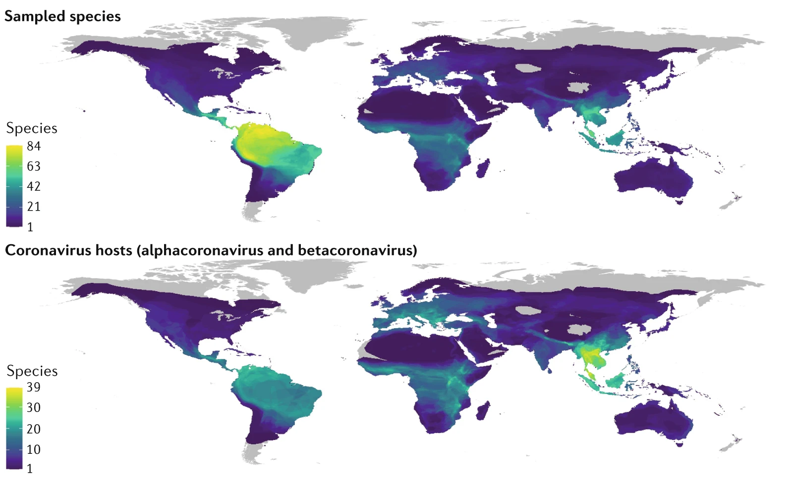
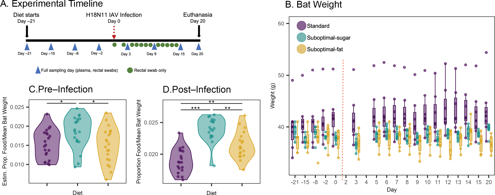
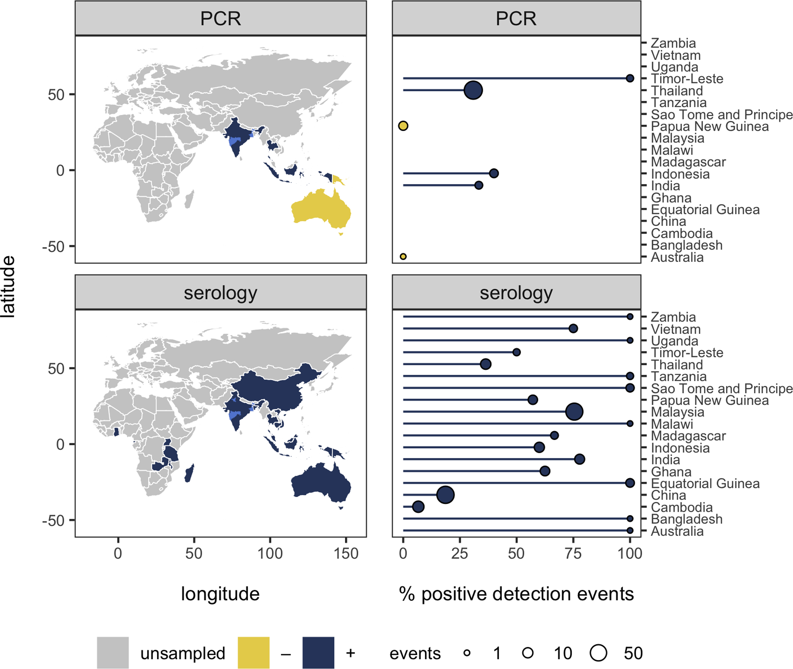

Daniel Crowley
Publications
About
Blog
Publications

Journal of Animal Ecology
2025
Cohorts of immature Pteropus bats show interannual variation in Hendra virus serology
How is Hendra virus maintaining transmission?

PLOS Biology
2024
Bats generate lower affinity but higher diversity antibody responses than those of mice, but pathogen-binding capacity increases if protein is restricted in their diet
Experimental infection models reveal surprising patterns in how bats make their antibodies.

Vaccines
2020
Identifying Suspect Bat Reservoirs of Emerging Infections
Analyses of phylogenies help us look for where Ebola virus and henipaviruses may be hiding.

Nature Reviews Microbiology
2022
Ecology, evolution and spillover of coronaviruses from bats
A wealth of information on coronavirus spillover events.

Proceedings of the Royal Society B
2025
Diet-induced changes in metabolism influence immune response and viral shedding in Jamaican fruit bats
A high fat diet leads to more viral shedding.

PLOS Neglected Tropical Diseases
2019
Prioritizing surveillance of Nipah virus in India
After a surprising spillover event in India, we help prioritize future surveillance steps.